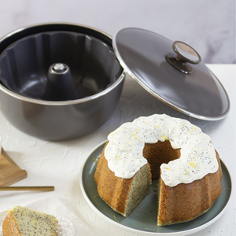

Torta de Limón y Amapolas

- 200 grs. de Manteca pomada
- 200 grs. de Azúcar
- 5 grs. de Sal fina
- 1 Cucharada de Esencia de vainilla
- 2 Cucharadas de Limón ralladura
- 4 Huevos
- 100 cc. de Limón jugo
- 300 grs. de Harina leudante
- 25 grs. de Semillas de amapola
- 100 grs. de Queso crema tipo Philadelphia
- 100 grs. de Azúcar impalpable
- 200 cc. de Crema de leche
- En un bowl batimos la manteca con el azúcar, la sal y la ralladura de limón hasta que esté bien cremosa. Agregamos la esencia de vainilla y los huevos de a uno, mezclando cada vez. Incorporamos por partes la harina y el jugo de limón y por último las semillas.
- Volcamos la preparación en el Savarín lubricado con manteca.
- Precalentamos la Cacerola 5’ a fuego mínimo. Colocamos dentro el Savarín con la mezcla y cocinamos a fuego mínimo 1 hora 15’ o hasta que al insertar un palillo de madera salga limpio.
- Para el frosting batimos con batidor de mano el queso crema con el azúcar impalpable, una vez que están integrados, agregamos la crema y seguimos batiendo hasta obtener una consistencia que forme picos firmes.
- Decoramos la torta con el frosting, semillas y ralladura de limón.